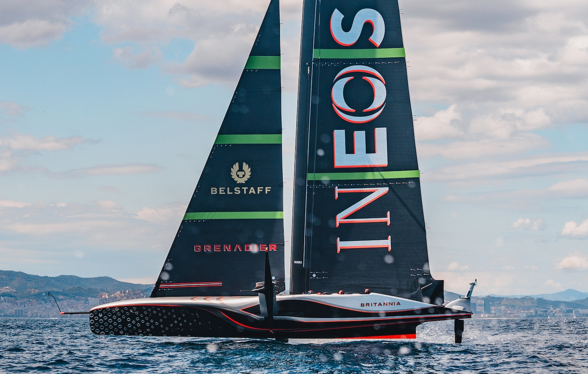

Yacht Racing

I come from a strong racing background that started in youth dinghy sailing in France and has developed into big-boat inshore and offshore campaigns. My recent work is increasingly focused on navigation, where meteorology, oceanography, and performance analysis all need to come together under pressure.
Explore →Weather Forecasting

Through MetWind I work on race-specific forecasts, strategic briefings, and routing support for high-level sailing teams. My focus is on turning complex model output into decisions that are actually useful on the racecourse and offshore.
Explore →Data Analysis

My technical work spans weather data pipelines, routing tools, performance analysis, and research projects in meteorology and oceanography. I use data science to connect observations, models, and practical sailing decisions.
Explore →Get in Touch
I am open to conversations about elite offshore and navigation campaigns, weather and routing roles, technical sailing projects, and anything that sits at the intersection of sailing, data, and performance. Bilingual English and French.